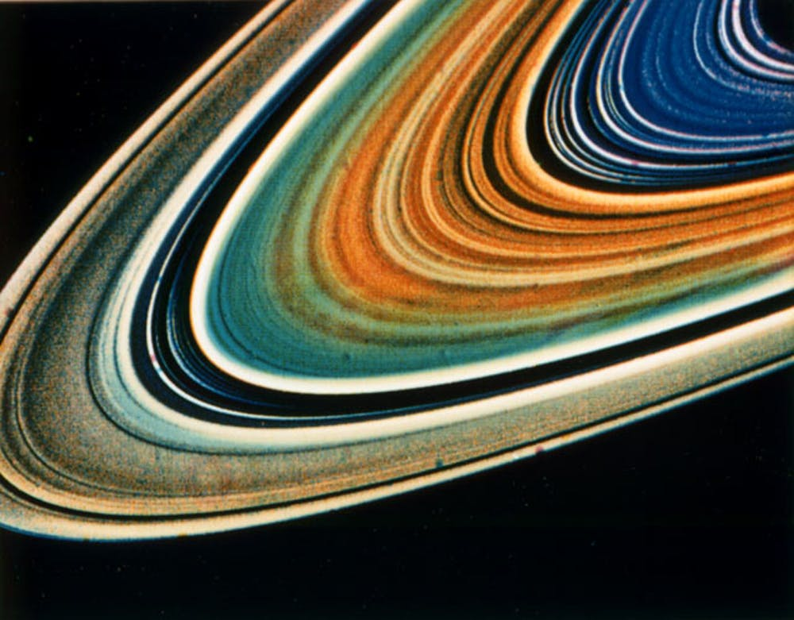
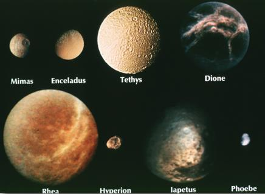
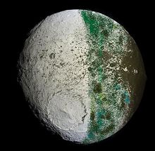
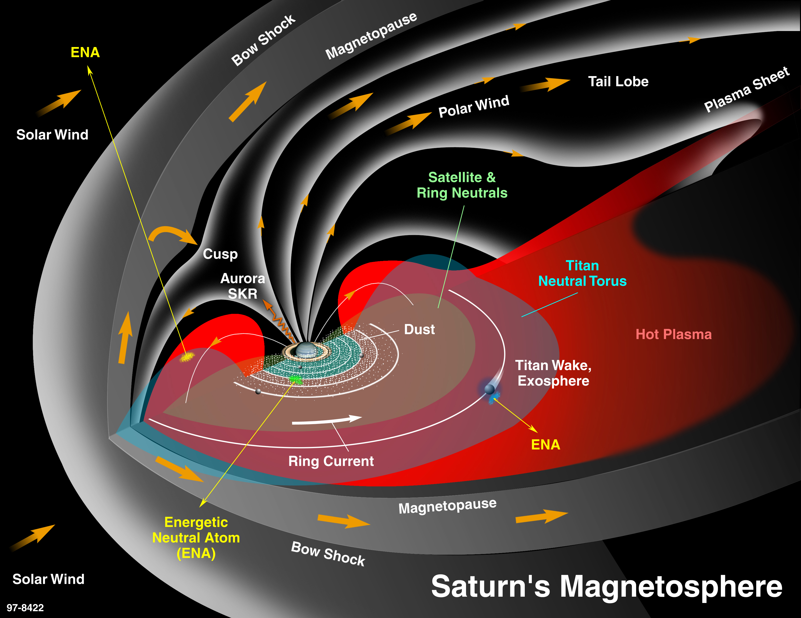
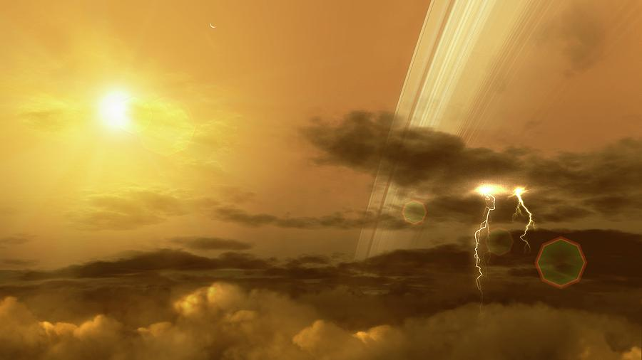
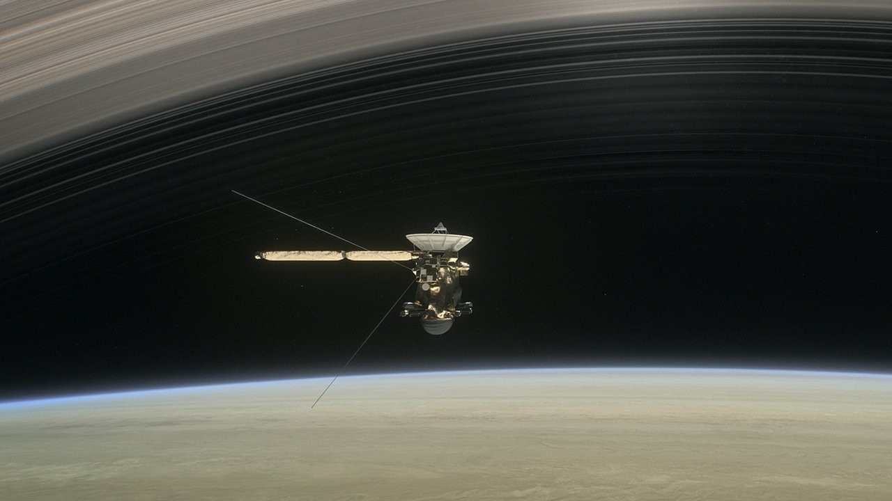
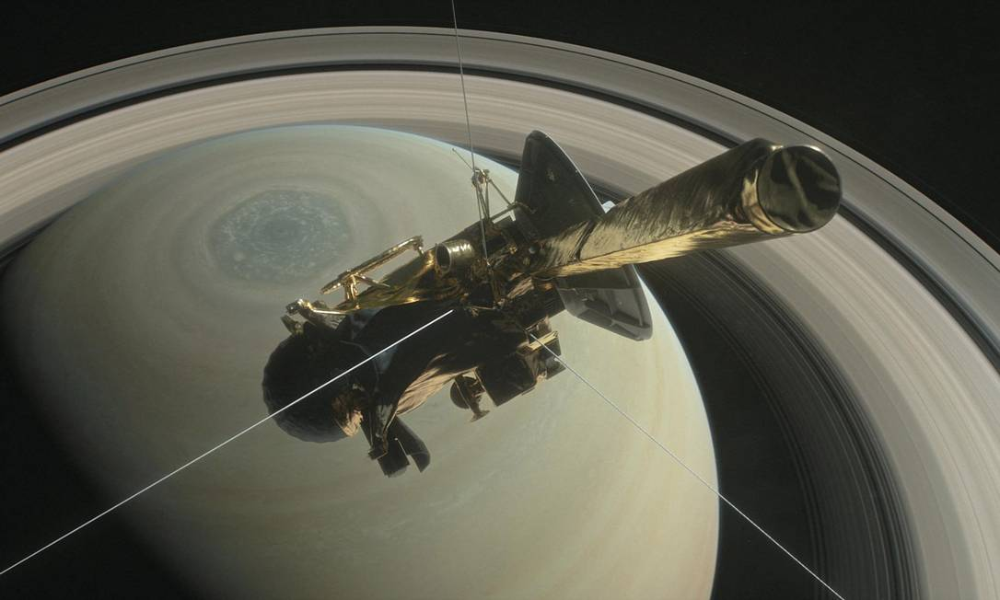

História
Cassini-Huygens foi uma missão espacial não-tripulada enviada em missão ao planeta Saturno e seu sistema de luas. Um projeto conjunto da NASA, ESA (Agência Espacial Europeia) e ASI (Agência Espacial Italiana), ela consistia de dois elementos principais, o orbitador Cassini e a sonda Huygens. Lançada ao espaço em 15 de outubro de 1997, ela entrou em órbita de Saturno em 1 de julho de 2004 e continuou em operação até 15 de setembro de 2017, estudando o planeta, seus satélites naturais, a heliosfera e testando a Teoria da Relatividade. Entre as muitas descobertas da missão estão ambientes potencialmente habitáveis nas luas de Saturno, incluindo um oceano de subsuperfície de água em Enceladus. Um projeto que levou duas décadas de planejamento e desenvolvimento até seu lançamento, após uma viagem interplanetária de quase sete anos, na qual sobrevoou Vênus e Júpiter, a nave entrou em órbita de Saturno na metade de 2004; em dezembro daquele ano a sonda europeia Huygens separou-se do orbitador Cassini da NASA e em 14 de janeiro de 2005 entrou na atmosfera e pousou na superfície do maior satélite de Saturno, Titã, transmitindo imagens e dados para a Terra, na primeira vez em que um objeto construído pelo ser humano pousou num corpo celeste do Sistema Solar exterior. A Cassini-Huygens integra o Programa Flagship para os planetas exteriores, o maior e mais caro programa espacial não-tripulado da Agência Espacial Estadunidense. As outras missões deste programa incluem as Viking, as Voyager e a Galileu. A espaçonave de duas partes foi batizada em homenagem aos astrônomos Giovanni Cassini e Christiaan Huygens.
Objetivos da Missão: O que a Missão Buscava Responder
-

A estrutura tridimensional e comportamento dinâmico dos anéis
-

A composição das superfícies e a história geológica dos satélites
-

A natureza e origem do material escuro do hemisfério dianteiro de Jápeto
-

Medir a estrutura tridimensional e comportamento dinâmico da magnetosfera
-

Estudar o comportamento dinâmico das nuvens de Saturno
-
Estudar o comportamento dinâmico das nuvens de Saturno
NOTÍCIAS
-

Set 14, 2017
Cassini: tudo sobre a missão que chegou mais perto de Saturno
Depois de ajudar a entender melhor o planeta gasoso e suas luas, sonda "se suicida" na atmosfera do Senhor dos Anéis do Sistema Solar
-

Set 15, 2017
Cassini se desintegra na atmosfera de Saturno após missão de 20 anos
O sinal da espaçonave desapareceu na manhã desta sexta-feira